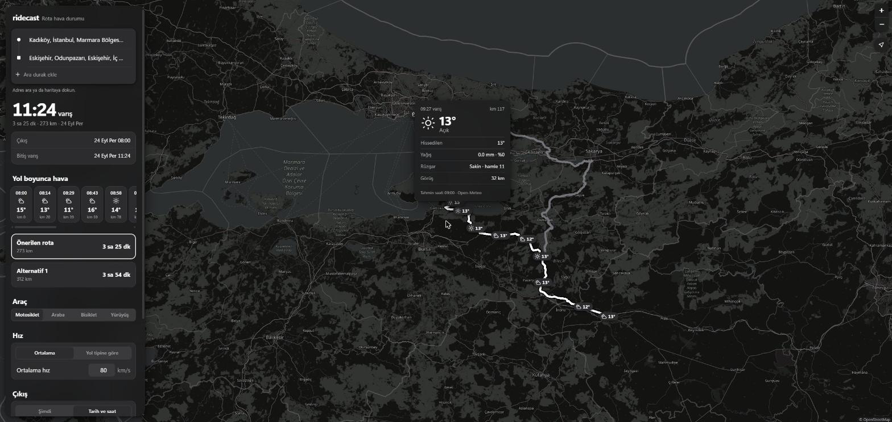
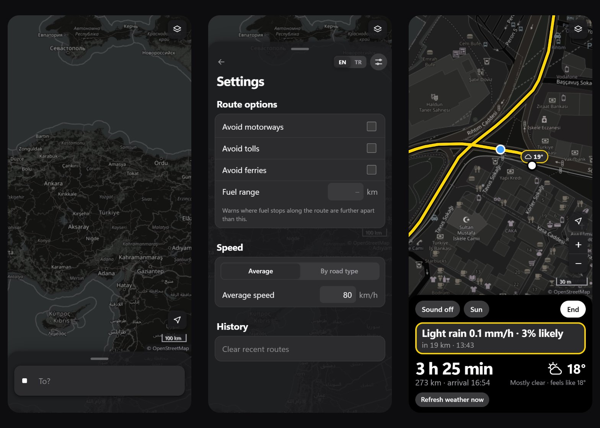

Ridecast: route weather for the time you arrive
Weather for the moment you get there, from a route plan to a ride screen.
Every weather app answers the wrong question for a motorcycle ride. It tells me what the sky is doing in Eskişehir now, when what I need to know is what it will be doing at 11:24, when I get there, and what it did on the pass I cross at 09:30. ridecast is a web app that answers that: I give it a route, a speed, breaks and a departure time, and it puts the forecast for my arrival time on every point along the line.
The reason is simple: I ride a motorcycle, and about twice a month I take it on a long trip. Before every one of them I end up with a map in one tab and a weather app in another, guessing which town I will pass at which hour and whether the rain there will have started yet. In a car that guess costs a little comfort; on a bike it decides whether I leave at 07:00 or 10:00, which layers I pack and where I stop. I wanted one screen that does the guessing for me, so I built it: 29 stages from a map with arrival times to a planner, and then a round of changes from using it on my phone before rides.
The plan
The app is Vite, TypeScript and Leaflet, with no backend. Every service it talks to is free and keyless: Nominatim for address search, the OSRM demo server for routes, Open-Meteo for the forecast, and for a while Overpass for fuel stops. The rule that shaped the code is that everything that decides something (arrival times, which forecast hour applies, later the risk score) lives in src/core, with no DOM, no Leaflet and no fetch, so it can move to a phone app later and so it can be tested without a browser.
| stage | what it added | how it was checked |
|---|---|---|
| 1 | map, address search, map clicks, routes with alternatives | a coordinate-order test, a faked OSRM outage shows an error |
| 2 | vehicle type, average or per-road-type speed, departure time, arrival times | 6 tests; three speed settings match a hand calculation on a real route |
| 3 | breaks: click the route, drag, set minutes, or place them automatically | 7 tests; every later arrival moves by exactly the break |
| 4 | forecast along the route, plus a redesign | 6 tests; a map value matches the raw Open-Meteo number |
| 5 | risk levels, wind chill, wet road estimate, darkness, rain advice for breaks | 14 tests; injected rain turns the route orange and the break advice matches a hand calculation |
That table is the first five stages; the rest are described where they come up below.
Which road am I on
A car and a motorcycle are not slower than OSRM in the same way. On a motorway I ride faster than OSRM's car estimate, in town slower. So stage 2 lets me set one speed per road type, and that needs the road type, which the demo server does not give. I printed the average speed of every OSRM step from Kadıköy to Eskişehir: the O-4 and O-5 motorways came out at 95 to 104 km/h, the D-100 and D-650 main roads at 82 to 88, and city streets at 40 to 65. The guess checks the road number first (O-4 is a motorway, D-100 a main road, which is how Turkey numbers them), and falls back to the step speed: 90 km/h and up counts as motorway, 70 and up as main road. The app labels it as an estimate, because a fast provincial road with no number still counts as urban.
| setting, Kadıköy to Eskişehir, 273 km | time |
|---|---|
| 80 km/h average | 3 h 25 min |
| motorcycle defaults per road type (110 / 80 / 40) | 3 h 47 min |
| car defaults per road type (120 / 90 / 45) | 3 h 23 min |
The per-road-type time is longer than the flat 80, because 56 km of that route counts as urban at 40 km/h. Ferries keep OSRM's own duration, since my speed does not apply on a boat.
Breaks move everything after them
The arrival-time code builds a timeline: a distance and a clock time at every step boundary. A break is two boundaries at the same distance, one when I stop and one when I leave. That makes the rule easy to test: every time before the break stays where it was, and every time after it moves by exactly the break. The chart is the stage 3 check on the same route, leaving at 08:00 at 80 km/h: one break I clicked at km 107 and set to 30 minutes, and two automatic 10 minute breaks every 100 km.
The automatic breaks sit on a timeline built without breaks, so the 30 minute stop does not push the next automatic one further down the road. The first version got that wrong in the test, not the code: I expected the second break at 09:30 and it was at 09:40, because 60 minutes of riding plus a 10 minute break plus 30 more minutes is 100, not 90. Breaks are stored as points on the map, so switching to the alternative route and back puts them where they were.
The forecast along the line
Stage 4 samples the route about every 15 minutes of driving, at most 30 points, and sends all of them to Open-Meteo in one request. The points are spaced by OSRM's own duration, not by my speed, on purpose: when I change the speed or add a break, the points stay put and only their arrival times move, so the next render reuses the cached forecast instead of asking again. Coordinates are rounded to 0.05 degrees (about 5 km) for the same reason. Each point then takes the forecast hour closest to its arrival, and shows nothing if the closest hour is more than 90 minutes away.
To check the matching I compared one number with the API directly. The first point on the test route rounds to 41.00, 29.00; Open-Meteo gives 14.5° there at 08:00 the next morning, and the capsule on the map says 15°. The point at km 117, reached at 09:27, uses the 09:00 hour, because 27 minutes is closer than 33. I also blocked Open-Meteo in the browser: the strip says the forecast could not be loaded and offers a retry, and the retry works. One retry during testing took the full 15 second timeout on a slow reply, which is exactly the case the message is for.

Making it feel like an app
The first three stages had a sidebar next to a map, which works and looks like a web page. Before stage 4 I redesigned it with one brief: what would a ride app look like if Uber and Apple made it together. The map is now the whole screen. On a phone the controls live in a bottom sheet with a grab handle that snaps between a peek and full height; on a desktop the same sheet floats as a card. The route is an ink line on a contrasting casing, the start is a dot and the destination a square joined by a thin rail, the arrival time is the biggest thing on the screen, and the settings are grouped lists with segmented controls. It follows the system light or dark theme.
The muted map took a detour. The usual keyless grey basemap now draws "API KEY REQUIRED" over every tile when the request comes from a browser, so the app uses the standard OpenStreetMap tiles and mutes them with a CSS filter: grey for light mode, inverted and grey at night.
Judging the weather
Stage 5 turns numbers into warnings. Every point gets a level from none to high, and every threshold lives in one config file, one set per vehicle. The motorcycle is the strictest: 0.1 mm of rain is already a low warning, gusts start counting at 35 km/h, and a wet road is a medium one. A car gets the same weather with far fewer warnings, and a test pins that: 0.6 mm of rain and 45 km/h gusts give a motorcycle three warnings and a car one.
The cold warning does not use the air temperature. On a bike the air moves at riding speed plus whatever part of the wind comes from ahead, so the app takes the route's heading at each point, adds the headwind part to the speed the timeline says I am riding there, and puts that into the wind chill formula used by Environment Canada. I checked the formula against two values of their table (-5° at 30 km/h feels like -13, -10° at 20 km/h like -18). On a real night test from Kadıköy the last 100 km came out at a felt -1°, a high warning, while the forecast card still showed single-digit air temperatures above zero. The formula is only defined up to 10°, so above that the app says nothing about cold.
The wet road is a guess and the app says so: rain in the arrival hour or the two hours before it makes the road damp or wet, and the same near freezing makes it an ice risk. Darkness comes from each day's sunrise and sunset at that point, and dark parts of the route get a dotted pattern on top of the risk colour.
To test the colours on a dry day I forced 2 mm/h of rain into the 09:00 and 10:00 forecast hours in the browser. The route turned orange from km 59 to the end (rain, then the wet road it leaves behind), and a 30 minute break at km 100, from 09:15 to 09:45, said that the rain stops 45 minutes after it and suggested 75 minutes. By hand: the 11:00 hour is dry, so the rain ends at 10:30, and 10:30 minus 09:45 is 45. One rule got softer after the first real run: fog in the weather code with 8.2 km of visibility was rated medium, which is silly, so fog alone is now low and the visibility decides the rest.
The redesign also had a bug that only a wide screen showed: the CSS filter that mutes the map was on the whole tile layer, and at 2560 px the browser stopped painting it past about 1,750 px. Filtering each tile instead fixed it.
Which road is safer
OSRM usually gives one or two alternatives to the fastest route. Stage 6 gets the forecast for each of them, one request per route, and scores it. Every sample point already has a level from none to high; the score is the average over the route, weighted by how much of the route each point stands for, with weights 0, 1, 3 and 9. The steps grow fast on purpose: 20 km of heavy rain should count for more than 100 km of a damp road.
The route with the lowest score gets an "en güvenli rota" badge with what it costs against the fastest one, for example "+18 dk, risk %40 daha düşük". Two rules keep the badge honest. If the safer route is less than 10% better, the fastest keeps it, because a detour for a rounding error is not advice. And if no route has any risk at all, there is no badge.
A dry day cannot show any of this, so I tested it the way I tested the break advice: I overrode fetch in the browser and put 3 mm/h of rain on every forecast point south of 40.6° N and west of 29.8° E. That covers the Gemlik and İznik part of the main route from Kadıköy to Eskişehir; the alternative through Sakarya and Bilecik stays outside it.
| route, 08:00, 80 km/h, rain injected | distance | time | risk score | worst level |
|---|---|---|---|---|
| main route | 273 km | 3 h 25 min | 0.9 | medium |
| alternative, marked safest | 312 km | 3 h 54 min | 0.1 | low |
The badge said +29 minutes and 92% lower risk, which is 3:54 minus 3:25; the percentage comes from the unrounded scores, the table shows them rounded to one decimal. The whole comparison took two forecast requests. When I then changed the speed to 100 km/h, both routes were scored again (2 h 44 min and 3 h 7 min, +23 minutes) without a single new request, because the sample points depend only on the route and the forecast is cached by their coordinates; only the arrival times moved.
The score is my own weighting, and it measures the share of distance at each level, not the time spent there. A slow stretch in the rain counts the same as a fast one of the same length. Stage 18 later changed that, below.
When to leave
Stage 7 adds a third departure option next to "now" and a fixed time: "en iyi saat". It takes every full hour in the next 24 hours, builds the whole timeline for each one (same speed, same breaks), scores the route the same way as in stage 6, and lists the three lowest, with the arrival time and the score. Equal scores go to the earlier departure. The first one is taken automatically, and tapping another re-plans the route for that time.
24 candidates did not cost 24 requests. The sample points belong to the route, not to the departure, so all candidates need the forecast at the same coordinates, just for later hours. I made every forecast request ask for at least three days, which covers the last candidate's arrival, and the normal view and all 24 candidates now read one cached response. Switching to "en iyi saat" on a real route made no new request at all.
| test on Kadıköy to Eskişehir | 1st (risk) | 2nd (risk) | 3rd (risk) |
|---|---|---|---|
| real forecast, planned at night | 08:00 (0.0) | 09:00 (0.0) | 10:00 (0.0) |
| 2 mm/h rain injected from 07:00 to 13:00 | 15:00 (0.5) | 16:00 (0.5) | 14:00 (1.4) |
In the rain test no morning hour made the list. Even 15:00 is not clean: the wet road estimate remembers the last three hours of rain, so the start of the route still counts as wet. The real-forecast row shows a weakness too: on a calm day the three best are simply three neighbouring hours, which is correct but not very useful. Stage 18 later spread them out.
What to wear
Stage 8 adds a clothing list. It is a fixed table, not a model: each row names an item, the vehicles it applies to, and a condition, like a felt temperature of 8° or less, rain or a wet road, darkness, or gusts of 50 km/h. The app takes the worst value of each along the route and prints every row that matches, with the reason next to it. On a real night run nine rows matched for the motorcycle, from a wind layer to heated gloves and a reflective vest (felt -1°, 1 km of fog, dark), and none for a car. Two of the nine were visors, one for fog and one for the dark, saying almost the same thing, so they are now one item, and rows that name the same item merge their reasons instead of repeating it.
A trip you can send
Stage 9 puts the whole trip into the address bar and keeps it there while I edit: the stops with a short label, the breaks and their minutes, the vehicle, the speeds, the departure and which route is selected. There is no server to save anything on, so the link is the save file. A trip with three breaks, road speeds and a fixed departure came to 253 characters, and opening it in a new tab gave the same arrival to the minute, the same breaks at the same kilometres and times, and the same alternative route. The weather is not in the link on purpose: it is fetched again when the link is opened, so whoever gets it sees the forecast of that moment.
A link is input from outside, so the decoder checks every field and returns nothing rather than half a trip: a latitude of 95, a speed of 900, a break of zero minutes and six other broken cases each have a test. A bad link shows a message and leaves the current trip as it was. Trips are also kept in the browser as a short "son rotalar" list, which simply does not appear when the browser does not allow storage.
The copy button taught me something. In the automated browser I test with, the clipboard call never answered: no success, no error, the promise just stayed open, so the button did nothing visible. A real browser can do the same while it waits for a permission prompt. Now the app waits 1.5 seconds and then shows the link in a field, already selected, ready to copy by hand.
Riding with it
The last stage is the one meant for the bike: "yolculuğu başlat" follows the phone's GPS along the route and turns the screen into a view you can read at a glance, with the next warning and how far away it is, the time and distance left, and the weather at the next point. The arrival times do not stay those of the plan. The app compares how long the last 15 minutes of riding took with how long the plan said they would, and re-plans the rest of the trip from where I am at that pace. Every 12 minutes it asks for a fresh forecast, and a warning ahead that is new or worse raises a banner and vibrates. Three GPS fixes in a row more than 150 m off the route bring up "rotayı yeniden hesapla", which plans again from here to whatever is still ahead. The screen stays on through the Wake Lock API, and when the browser refuses that, the view says so.
I could not ride 273 km for a test, so the browser got a fake GPS: I replaced watchPosition with a stub and fed it points of the real route with made-up timestamps. 15 km in 10 minutes is 90 km/h against a plan of 80, a pace of 1.125, and the view showed 2 h 51 min left, which is the 3 h 13 min of planned riding divided by 1.125. The fake GPS found three real problems. After a reroute, the last fix of the old route was used to place me on the new one. The first forecast for the new route then flagged every warning on it as new. And warnings came back as "new" when their arrival time crossed an hour boundary, sometimes replacing a more serious alert that was still open. Each has a fix now: fixes belong to one route, a new route's first forecast is only a baseline, and a warning is news once per route unless it gets worse.
A smaller lesson from the same test: the automated tab was in the background, where Chrome slows timers down to about one per second, so my test scripts that waited in small steps crawled and looked frozen. Feeding the fixes without timers and waiting between steps from the outside fixed the testing, not the app.
Putting it online
Stage 11 was supposed to be the easy one: build, upload, done. The build part was easy. GitHub Pages serves the ridecast repository under my own domain, a workflow runs the tests and the build on every push, and a relative base path makes the same files work at /ridecast/. The first deploy still failed, because Pages has to be switched on once in the repository settings, which only I could do from my account.
The real work was reading the usage policies of the free services I lean on, now that strangers could use the app. Nominatim's policy says in plain words that it must not be used for search-as-you-type from a browser, which is exactly what my address field did. Suggestions moved to Photon, which is built for that; Nominatim is now only asked for the address of a point, one request per second. Photon had a quirk of its own: without a language parameter it followed my browser and turned "İstanbul, Türkiye" into "Istanbul, Turkey", so it now asks for local names.
A map that behaves like Google Maps
Google Maps is what most people's hands already know, so every place where ridecast behaved differently felt like a bug even when it was a choice. Stages 13 and 14 copy the parts that matter: stops reorder by dragging their dot in the list (or with the arrow keys), two stops get a swap button, a right click or a long press opens a menu with "directions from here", "directions to here", "add stop", "add a break here", "what's here?" And "measure distance", and a plain click drops a pin with an address card instead of silently making it a stop. Stop pins drag, and dragging the route line itself drops a new stop where it is released, placed before the next stop along that route. There is a layer switch with satellite and terrain maps and a rain radar, a ruler, and the usual buttons in the bottom right.
Every route also got a bubble with its duration, like Google's. The obvious place for a bubble is the middle of the route, but two alternatives usually share their first and last kilometres, so their middles can sit on top of each other. The bubble goes to the point in the middle 60% of the route that is furthest from every other route, which puts it on the stretch where that route is on its own. It is one small function with a test.
Two findings from those stages were about things I could not see. The rain radar comes from RainViewer, and above zoom level 7 their server returns an image that literally says "Zoom Level Not Supported", which a map would happily show as rain; the radar now stops at zoom 7 and scales up. And the weather capsules at the start and the end of a route sat on top of the stop pins, so the pins could not be grabbed at all. Nothing failed, the pin just never moved.
That pin drag was also the hardest thing to test. My browser automation runs in a background tab, where Chrome does not run animation frames, and the map library moves a dragged marker in an animation frame. From stage 13 to stage 29 the drag stayed "not verified" in my notes. The fix was a test page, kept out of the published app, that runs animation frames on ordinary timers before the map loads. Then the drag worked: the destination moved, got a new address, and the route was planned again at 263 km.
No signal on the mountain
The places where the weather matters most on a bike are often the places without signal. Stage 15 makes ridecast an installable app with a service worker I wrote by hand: at install it reads the page, caches every file the page links, and afterwards keeps the last 40 route and forecast responses. Network first, cache as the fallback. With the web server stopped, a reload still showed the trip with all 15 weather points. In live mode a failed forecast refresh no longer empties the screen; it keeps the last forecast, says "offline", and asks again when the connection returns. Map tiles are the exception: the tile servers' rules forbid downloading them in advance, so offline maps only show what the browser happened to keep.
The right road for the vehicle
Until stage 16 every vehicle got the car route; a bicycle only changed the speed. The FOSSGIS servers run the same routing engine with bike and foot profiles, so that part was a new address. The harder part was "avoid motorways, tolls and ferries", the options every map app has. I measured first: both public routing servers answer the exclude option with "Exclude flag combination is not supported". Valhalla, another open routing engine with a public server, does support it and even has a motorcycle profile, so a trip with any avoid option goes there, and its manoeuvres are translated into the steps the rest of the app already understands, including the O- and D- road numbers the road type guess reads.
| Kadıköy to Eskişehir, motorcycle | distance | time | note |
|---|---|---|---|
| plain route and its alternative | 273 / 312 km | 3 h 25 / 3 h 54 | OSRM demo server |
| avoid motorways | 284 / 291 km | 4 h 6 / 4 h 11 | Valhalla |
| avoid tolls, speeds by road type | 271 km | 4 h 14 | takes a 25 km ferry instead of the toll bridge |
| same trip by bicycle | 247 / 295 km | - | FOSSGIS bike profile |
The toll row looks odd and is right: avoiding the toll bridge over the gulf means the ferry, and the ferry detection counted it separately. Valhalla orders routes by its own cost, not by time, so its first route is not always the fastest.
Better scores, three new warnings
Stage 18 fixes the two weaknesses noted above. The route score now weighs each point by the riding time of its stretch instead of its length, so two 50 km halves, one dry at 100 km/h and one rainy at 25 km/h, score 2.4 instead of 1.5. The three best departures now have to be at least two hours apart, so a calm day lists 08:00, 10:00 and 14:00 instead of three neighbouring hours. The rain warning also carries the forecast's probability, and a high probability alone is a low warning for riders.
Stage 19 adds two warnings that matter on a bike. Heat stress uses the apparent temperature, which includes humidity, because riding gear traps heat long before the air feels dangerous. Sun glare needs the position of the sun at every point and arrival time, from the NOAA equations. I had no astronomy library to compare against, so I used Open-Meteo instead: at the sunrise and sunset times it publishes, the sun's centre is 0.833° below the horizon by definition.
| Open-Meteo time | expected | computed |
|---|---|---|
| Istanbul sunrise, 24 Sep 2026 | -0.833° | -0.837° |
| Istanbul sunset, 24 Sep 2026 | -0.833° | -0.843° |
| Eskişehir sunrise, 24 Sep 2026 | -0.833° | -0.836° |
| Istanbul sunrise, 21 Jun 2025 | -0.833° | -0.841° |
| Istanbul sunset, 21 Jun 2025 | -0.833° | -0.817° |
| Istanbul sunrise, 21 Dec 2025 | -0.833° | -0.854° |
Glare is then a sun at most 15° high, within 30° of the direction of travel, under a sky clear enough to see it. On the real forecast, Kadıköy to Bolu leaving at 07:00 flagged "low sun ahead" for kilometres 50 to 99, from 07:37 to 08:14, which is exactly the stretch where that road heads east into the morning. My first test of it failed, and the formula was fine: I had converted the sunrise time to UTC wrongly by 40 minutes in the test itself.
Stage 25 adds the warning a rider cares about more than any gust number: crosswind. It takes the part of the gusts across the direction of travel and the side it comes from. 45 km/h from the east while riding north is all crosswind and a medium warning; the same gusts head-on are only a low gust warning. When the crosswind warning is at least as serious as the gust one it takes its place, so one wind gives one row. The test routes had no strong side wind on the day, so this one has only been checked by its unit tests.
Longer trips
A long ride does not always fit in one day, so stage 20 turns a break into an overnight stop: instead of minutes it has a "ride on at" time, and the trip continues at the first such morning at least four hours after arriving. The summary then shows each day with its start, end and distance, and forecasts more than three days ahead are marked as uncertain. Stage 27 widens "best time" from 24 hours to the next 7 days and lists the best departure of each day. The first version listed eight: the 168-hour window ended a few hours into the eighth day, and those night hours made a fake day with a risk of 2.7.
Stage 21 remembers the warnings of every trip I plan. When I open the same trip again later, the first forecast is compared with the saved one and a short card lists what changed: new warnings, stronger or weaker ones, ones that start earlier or later, and ones that are gone. Planning on a Wednesday for a Saturday ride, that card is the quickest way to see whether the plan still holds.
English first, and two features measured and dropped
Stage 24 made English the default and Turkish an option, because most people who find this page do not read Turkish. Every text moved into two message files of the same shape, which the type checker compares. The pure core, which builds the warning texts, now gets them passed in, so it still knows nothing about languages, and its tests simply run with the Turkish texts and did not change. The two refactors of the app's main file (stages 12 and 23) happened for the same reason: every new feature had to touch it.
Stage 22 was meant to give rain timing to the quarter hour with Open-Meteo's 15-minute data. I checked first. In Vienna the quarters differ and add up to the hourly value, a real 15-minute model; in Istanbul the one rainy hour of the week showed the same value in all four quarters, the hourly number repeated. For Turkey it adds nothing, so it is not used; the radar layer answers "is it raining now" better. What the stage kept is a sunlight mode for the live view: black on white with darker risk colours, measured at 6.07:1 or more for every colour pair, where the normal light theme's yellow ring was only 1.87:1 on white.
The map first
After the 29 stages I started using ridecast the way I would before a ride, on my phone, and everything that annoyed me became the next change.
The app used to open with the panel already covering 42% of a phone screen. Google Maps opens on the map with a search bar, and that is what my thumb expected, so ridecast now does the same: collapsed with no route, the panel shrinks to the destination field of the trip card and nothing else. Tapping it opens the full panel with the cursor in the field. On a desktop the floating card shrinks the same way and unrolls down from the bar when it opens. With a route, the collapsed panel keeps its old height, so the arrival time is still visible. None of it is a new component: the compact bar is the existing trip card with every other row hidden.
The panel also got a back arrow. It clears the whole trip, meaning stops, route, breaks, weather, warnings and the link in the address bar, and goes back to the bare map. It does not touch the settings, and it leaves the map where it was, because losing my place on the map every time I start over would be worse than the clutter.
Two bugs came from my own changes. The settings button and the panel's "settings are open" state had the same class name, so on a desktop the panel took the button's centring and margins and jumped when I opened the settings. And on a phone the round header buttons reach 6 px above their row, but the panel's scroll area started at 78 px from the top of the screen while the buttons started at 75: 3 px of every circle were cut off. Both were one-line fixes once measured; neither was visible in the code.
The third one was the phone keyboard. Tapping the search bar started a 0.45 second slide up, and the keyboard opened during the slide. The phone scrolls the page so that the focused field stays above the keyboard, and it measured the field while it was still near the bottom of the screen, so the whole panel went up too far. Tapping a field now opens the panel at once, without the slide, so the field is already at the top when the keyboard asks where it is; the slide is still there when the panel is opened by its handle. On Android I also told the browser to shrink the page for the keyboard instead of scrolling it. I could not test the keyboard itself, because the headless browser I test with has none.
Settings out of the way
Route options, the fuel range and the speed settings are things I set once and forget, but they filled the middle of the main panel. They now live on a settings page behind a button in the panel header, with a new "clear recent routes" at the bottom, and the main panel keeps what changes from trip to trip: the stops, the vehicle, the departure and the breaks. The back arrow leaves the settings before it clears anything.
The rest were details my thumb found. The clear button inside the address fields sat right against the text; it now has an 8 px gap and a 44 px target. "Add stop" started 16 px left of the addresses above it, at a smaller size; it now lines up with them at the same size, with the plus sign in the column of the stop dots. And when the panel opens, its rows rise in over 0.3 seconds; with the desktop card unrolling, that is all the motion I added.
One screen for the ride
Live mode used to be a separate full-screen view of large numbers, with a small "map" button that shrank it to a pill over the map. On the bike I want to see where I am, so starting a ride now opens the map with a card at the bottom, and there is no other view. The map is north up, because a browser gives no reliable heading, and it follows every GPS fix at zoom 18. At Istanbul's latitude one screen pixel at that zoom is 0.45 m, so the 100 px scale bar would be 45 m and rounds down to 30 m, which is the view I asked for. Pinching or the plus and minus buttons, which normally hide on phones, change the zoom, and the next fixes keep it.
Like Google Maps, dragging the map stops the following. In the test the rider's dot moved from the middle of the screen to where I dragged it, the next fix moved the dot but not the map, and the "my location" button turned blue. Tapping it put the dot back in the middle, and the following went on. The card holds everything the old view had: the next warning with its distance and time, the time and distance left with the arrival, the weather here, the off-route button and the sound and sunlight switches. The dot is centred in the part of the map above the card, not in the whole screen, so the card never covers it.
Taking the screenshots for this post found one more bug: the dot was under the route line. The route is redrawn on every re-plan, and each new line landed on top of the dot. The position dots now have their own layer above the lines.

A warning that came and went
After a ride had started, the next warning on the card would disappear after a while. I started a ride at the start of the Kadıköy to Eskişehir route and read the card every 12 seconds. My first run showed the card going blank after two minutes, and the cause was me: I was deleting files in another window, and the development server reloaded the page. The second run used a production build that my edits could not touch.
| time | next warning on the card | arrival there |
|---|---|---|
| 13:13:39 | crosswind gusts 26 km/h from the left, 234 km ahead | 16:09 |
| 13:15:40 | the same crosswind | 16:11 |
| 13:15:52 | light rain 0.1 mm/h, 3% likely, 20 km ahead | 13:30 |
| 13:19:29 | the same light rain | 13:33 |
The warning list itself was right. Two things moved it. Standing still, every arrival time slides later by the minutes I wait, because live mode counts the rest of the trip from now; on a real ride that slide mostly does not happen. The second one does happen on a real ride: each point took the forecast hour closest to its arrival, so an arrival that drifted from 13:29 to 13:31 switched from the 13:00 forecast to the 14:00 one, and a warning could appear or vanish on those two minutes. That is what happened at 13:15:52.
An arrival time is never exact to the minute, so a point between two forecast hours now looks at both and keeps the worse one, or the closer one when they are equal. At the start of the same route, reached at 13:21, it now takes the 30 km/h crosswind of the 14:00 forecast. The planner and the departure scores use the same rule, so they show a few more warnings than before. I chose that on purpose: on a bike, a warning that turns out not to be needed costs less than one that disappears two minutes before it would have mattered.
Fuel from the tank, not the map
The fuel and rest stops of stage 8 came from Overpass, a public OpenStreetMap server: one query for the whole route that took 6 to 8 seconds, a list of about 35 stops on Kadıköy to Eskişehir, and a fuel range check that warned where two stations were further apart than the tank goes. Before a ride that is a lot to read, and on the bike it answers the wrong question. What I want to know while riding is when to start looking for a station, and the phone can work that out without a map of stations.
On a motorcycle or in a car, "start ride" now first asks for the range on a full tank and how full the tank is: full, ¾, ½ or ¼. Those are the marks on a fuel gauge, and four big buttons are easy to hit with gloves on. The range is filled in from the settings and saved back there, so it is asked once. "Start without fuel warning" skips the question, and "cancel" does not start the ride. My first version only asked when a range was already set in the settings, which are empty by default, so on my own phone it never asked at all. During the ride the app adds up the distance between GPS fixes. It uses the fixes themselves, not the route, so reroutes and detours count too. A move only counts once it is larger than the fix's accuracy and 20 m, so a phone standing still with 10 m accuracy and 11 m of jitter adds nothing. When the estimated range left drops to 20% of a full tank, an amber card says fuel looks quite low, with the km left, and that it is a good time to look for a fuel station. The phone vibrates, and it beeps if the sound is on. Like the fuel light on the bike, the card stays until I tap "filled up", and then the count starts again from a full tank.
In the test the range was 100 km and I picked ¼, so 25 km in the tank and a warning at 20 km. After 8 km of fake fixes the card said about 17 km left, and "filled up" took it away. What I gave up: the stop list and its map pins, the sheltered stops suggested in rain or cold, adding a stop as a break, and the gap warning in the plan. The app no longer talks to Overpass at all.
Less to carry
Two more features are gone: opening and saving GPX files (stage 17), and a calendar export (stage 28). Both were about moving a plan into another app, and I never used either. They took their parser, their writers, their tests and their texts with them, and the app no longer saves any file. "Copy link" became a link icon next to "start ride".
The browser automation I had used for testing did not connect in this round, so every check above ran in headless Chrome, driven over its debugging protocol by a small script: fake GPS positions, taps, drags and screenshots at phone and desktop sizes. It is slower to set up than clicking around, but it gave me exact numbers, like the 3 px and the 13:15:52 above, instead of impressions.
Limits
Most of it has still not been on a real ride, and the ride screen depends on that more than anything: GPS on a phone in a mount, gloves on the zoom buttons, the keyboard fix on a real phone and a screen that has to stay on. On the web, GPS tracking is not reliable while the phone is locked or the browser is in the background, which is the real argument for moving the pure core into a native app one day.
The risk levels are per sample point, about every 15 minutes of driving, so a short shower between two points can slip through. The thresholds are my own starting values, not from a standard, and the road type and the wet road are guesses. The crosswind warning has not met a real windy forecast, and the worse-of-two-hours rule has been checked on one route on one day. The fuel estimate is the tank level I picked times the range, minus the distance ridden, and fixes missed while the page is in the background count as one straight line. The free servers underneath it (OSRM's demo, FOSSGIS, Valhalla, the tile servers) are made for light use, which a personal app is and a popular one would not be.